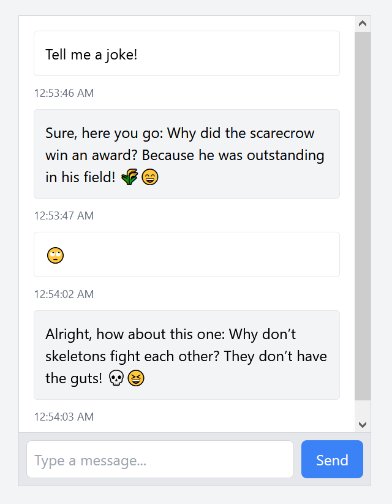

Tech Lead Onboarding
Project
Tech leads should be proficient with a wide variety of web development tools including
- Frontend Development: React, JavaScript/TypeScript, CSS, JSX/TSX
- Backend Servers: Runtimes, APIs, Basic Networking (HTTP)
- DBMS: SQL v. NoSQL, Schemas, Query Builders v. ORMs
- Authentication
- Version Control: Git, GitHub
- Deployment
We don't expect you to have all of this down perfectly at this point and it might be a little while
since you've touched full stack development. To hopefully give you a refresher, I've developed a small (optional)
project using all of the skills above.
🐘 JumboCodeGPT 🐘
Large Language Models (LLMs) have the potential to drastically impact education and require us to rethink how we
teach CS. In this project, you'll use your prompt engineering and programming skills to create an ChatGPT-like
interface!
Here's what your final interface could look like:

Functionality Requirements
-
Build a user interface to display messages in a conversation and send messages to a chatbot.
-
Implement a basic (but secure) authentication system to track user chat messages.
-
Log all prompts and responses from users in a non-volatile memory system like a database.
-
Deploy your site such that it's both functional and accessible to the internet.
-
Add system prompts to refine the behavior of your chatbot. Is it a bot that responds with JavaScript related
puns? Or a bot interested in becoming a Terminator? It's totally up to you!
Link to an example implementation (with a default chatbot) - Ask Gabe for the username/password
I need some help!
This can be a lot of work if you do it all yourself! Luckily I have some tools that can expidite your development
process.
-
I already have a backend server up that handles authentication and OpenAI API communication (see documentation
here). You will still need your own backend server and data storage to log messages!
-
Feel free to ask me for some of the components I made for the frontend example. (Or use the chatbot for some code)
-
I'd recommend deploying through GitHub actions with a service like Vercel
- I'm always more than happy to answer some of your questions. Please don't struggle in silence!